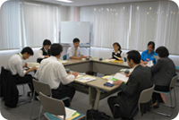

埼玉県生協連第1回広報担当者会議 報告
- 【日時】
- 10月8日(金)10:30～12:30
- 【場所】
- 埼玉県生協連・会議室
- 【出席者】
- 8人(さいたまコープ、ドゥコープ、生活クラブ、医療生協さいたま、労済生協､コ－プネット事業連合、さいたま住宅生協、事務局)
■議題
- 自己紹介
- 埼玉新聞｢県内生協特集｣について
11月下旬と来年2月の2回、埼玉新聞に生協特集を掲載することを報告しました。その後、第1回目の概要を提案し意見交換しました。 - 各生協の広報紙・誌を紹介しながら交流
＜コープネット事業連合＞
10月から広報誌の紙面を変更しました。全国の主要産地の生産者と組合員理事や役職員が一緒に交流しています。7月には美ら島プロジェクトを立ち上げ交流を開始する等、日本を食卓から元気にしたい取り組みを進めています。
＜さいたまコープ＞
40周年を迎え、23日24日とスーパーフェスタを開催します。｢にじのひろば｣は、コープネットと共同して作成。ホームページに力を入れています。
＜ドゥコープ＞
あすーるは昨年の11月に紙面を変更。最初の見開きは、組合員活動テーマ委員会で案を検討し特集を組んでいます。1年経過し新しい紙面を検討中。
＜住宅生協＞
広報誌｢快適住まい｣は年4回発行。テーマは発行月に決めています。利用者のお宅を訪問しての記事作成や資料を読んでもらえるようビニール包製にして郵送する等の工夫をしています。
＜生活クラブ生協＞
スピカは、理事等7人が担当し、地域福祉情報を隔月で掲載しています。カモンカモンは、イベント情報誌で6月からコップモップ関連を掲載しページ数も増やしました。ホームページは、トップを隔週で変更しました。
＜医療生協さいたま＞
機関紙は組合員ボランティア1万人が手配りしています。ウォークイベントでは、参加費を｢世界の子どもにワクチンを日本委員会｣に寄付しています。｢健康と平和｣は、8月から紙面を変更し組合員の関心が高い健康情報にしました。
＜労済生協＞
組合員への情報は、全労済本部で作成。慶弔共済は単協で作成しています。10月に折り込みを予定。6月～8月にかけ例年になく落雷が多く、問い合わせが多くきています。